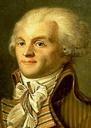

|
|
am Dienstag, den 4.1.2000 | ||||
|
|
|||||

Schade, daß der faltige Buchhalter keine Schreibmaschine mehr hatte, die er hätte verwenden
Werner verfluchte die anonyme Computertechnik. Er hatte zwar irgendwo gelesen, daß es Verfahren gab, Schriftstücke dem Nadeldrucker zuzuordnen, aus dem es stammte. Aber dem Bärtigen und seiner provinziellen Spurensicherung stand eine solche Technik sicherlich nicht zur Verfügung und so lohnte es bestimmt nicht, den PC des faltigen Buchhalters zu bemühen.
Er klebte also noch fein säuberlich seine Adresse auf den Umschlag und obwohl die Briefmarkengummierung wieder einmal scheußlich geschmeckt hatte, grinste Werner jetzt vor Stolz und Zufriedenheit.